خواجه نصیرالدین طوسی
پیشگام نظام انتخاب و تکامل اجتماعی
۱۲۰۱ — ۱۲۷۴ میلادی

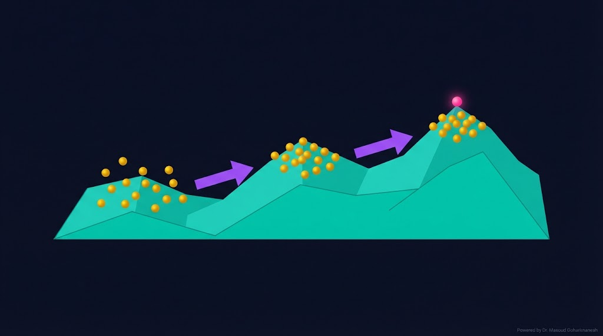
(Evolutionary Optimization: GA & PSO) — جلسه ۲۳
دکتر مسعود گوهری منش
دانشیار گروه مهندسی مکانیک — دانشگاه تربت حیدریه
تا امروز با روشهای گرادیانی (GD، Adam، KKT) کار کردیم. اما این روشها محدودیتهایی دارند: نیاز به مشتق، گرفتار شدن در local minimum، و حساسیت به مقدار اولیه. الگوریتمهای تکاملی از طبیعت الهام میگیرند و این محدودیتها را دور میزنند.
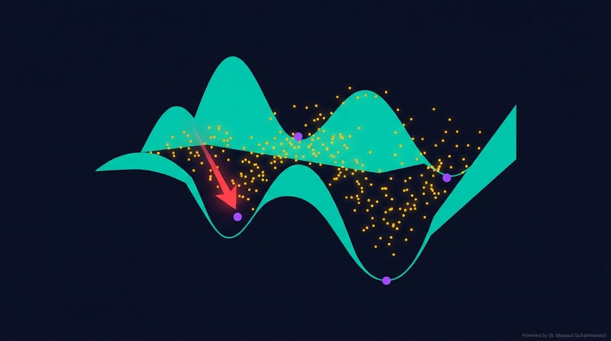
GD در تابع غیرمحدب، ممکن است در local min گیر کند.
برای توابع ناپیوسته یا non-smooth، GD کار نمیکند.
نتیجه به مقدار اولیه و نرخ یادگیری حساس است.
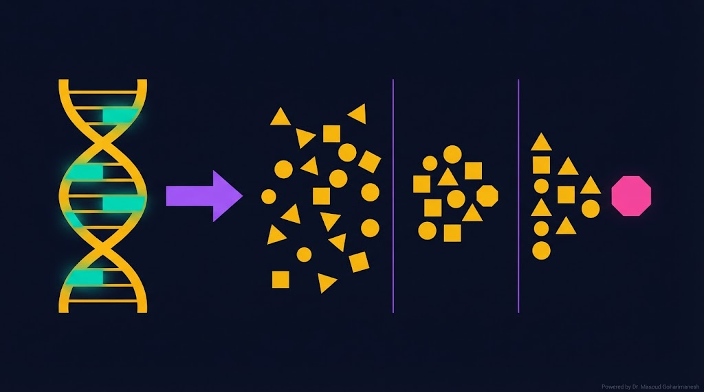
GA از تکامل زیستی داروین الهام گرفته:
راهحل = کروموزوم
جمعیت از کروموزومها
برازش = کیفیت راهحل
نسلهای تکامل
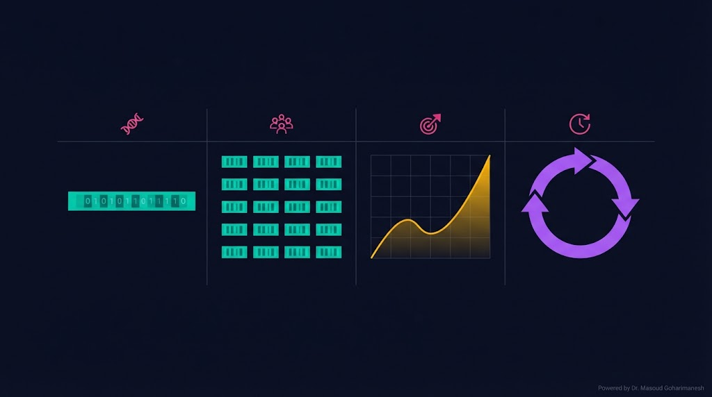
یک راهحل کاندید — معمولاً بهصورت بردار باینری یا حقیقی.
مجموعهای از کروموزومها (معمولاً ۲۰–۱۰۰).
کیفیت هر راهحل. در مینیممسازی:
یک چرخهی کامل: انتخاب، ترکیب، جهش.
معمولاً ۵۰–۲۰۰ نسل.
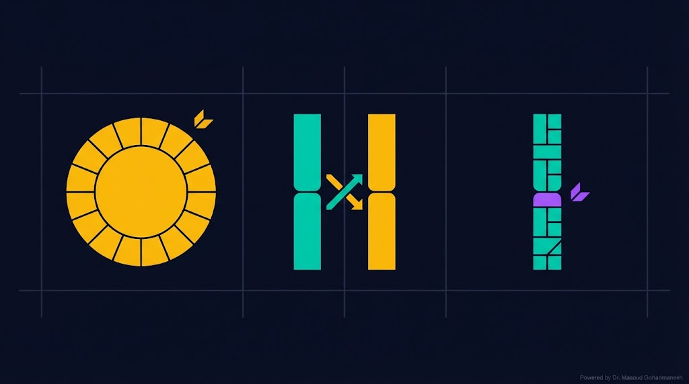
افراد با برازش بالاتر، شانس بیشتری برای انتخاب دارند (Roulette Wheel، Tournament).
دو والد بخشهایی از کروموزوم خود را با هم عوض میکنند:
یک یا چند ژن بهصورت تصادفی تغییر میکنند تا تنوع حفظ شود.
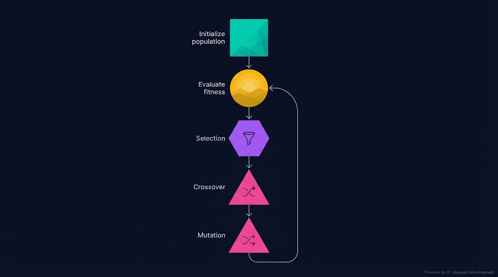
# === GA Pseudocode === initialize population P (size N) evaluate fitness for each x in P for gen in range(max_gen): # 1) Selection parents = select(P, fitness) # 2) Crossover offspring = crossover(parents, p_c) # 3) Mutation offspring = mutate(offspring, p_m) # 4) Evaluate evaluate fitness for each new x # 5) Replacement (Elitism) P = best_from(P + offspring, N) # 6) Check convergence if converged(P): break return best_x
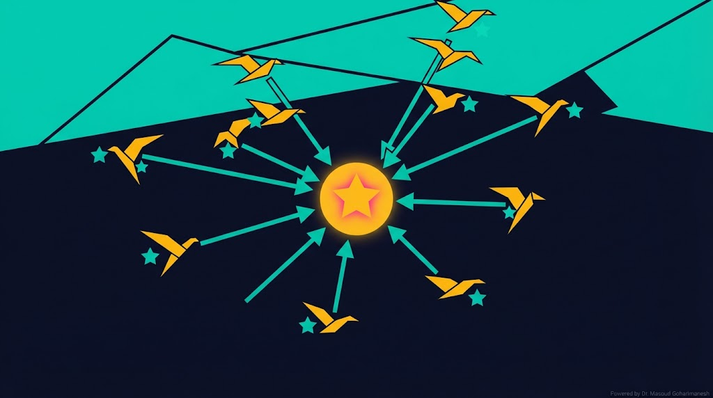
PSO از رفتار گروهی پرندگان در جستجوی غذا الهام گرفته:
موقعیت ذره
سرعت حرکت
بهترین موقعیت شخصی
بهترین موقعیت گروه
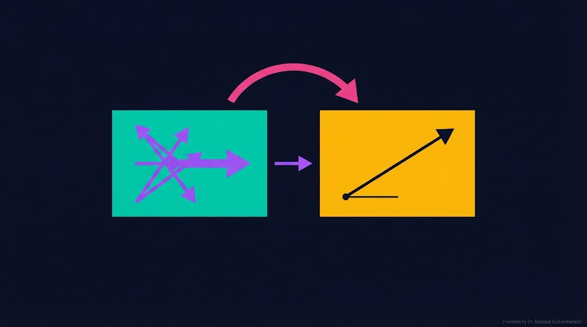
۰.۴–۰.۹
~۲.۰
~۲.۰
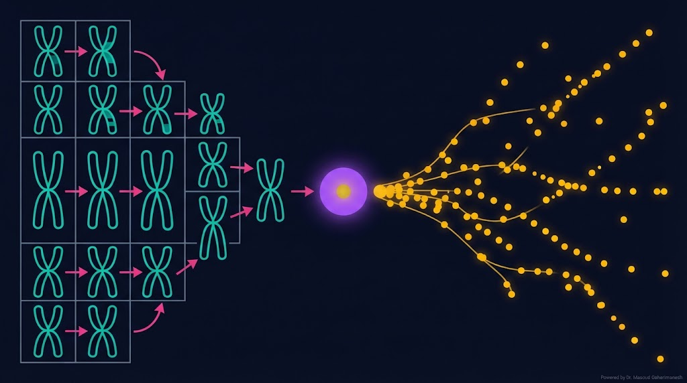
| ویژگی | GA | PSO |
|---|---|---|
| الهام | تکامل زیستی | رفتار پرندگان |
| جمعیت | کروموزوم | ذره |
| عملگرها | Selection، Crossover، Mutation | Velocity update |
| حافظه | ❌ ندارد | ✅ دارد |
| پیادهسازی | پیچیدهتر | سادهتر |
| تنوع | بالا | پایینتر |
| سرعت | متوسط | سریعتر |
| بهترین برای | مسائل گسسته و پیچیده | مسائل پیوسته و بهینهسازی سریع |
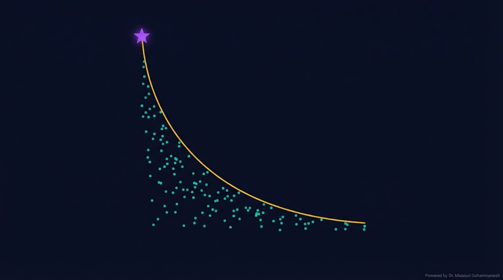
در مسائل واقعی، معمولاً چند هدف متضاد داریم:
$x_a$ بر $x_b$ غالب است اگر در همه اهداف بهتر باشد.
مجموعه همه نقاط غیرغالب.
محبوبترین الگوریتم چندهدفه.
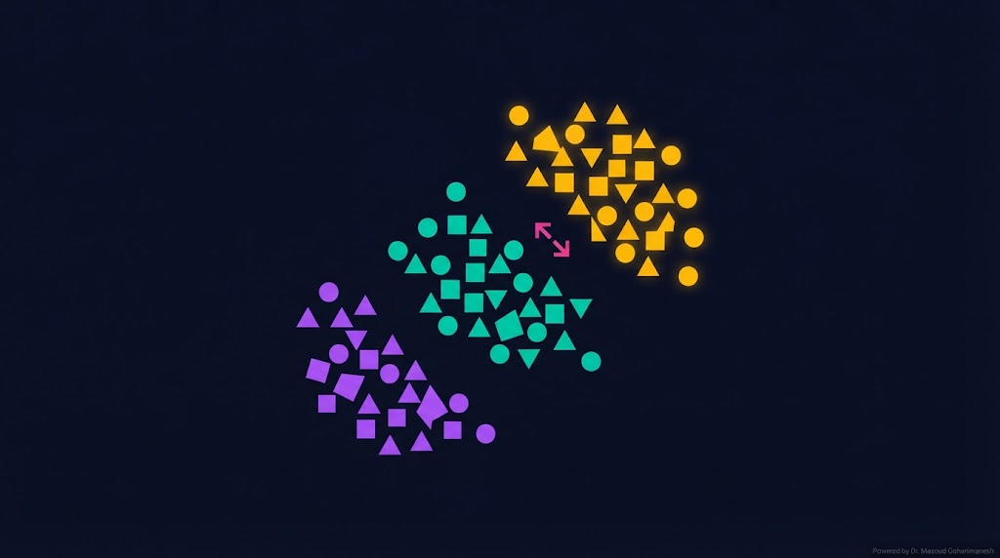
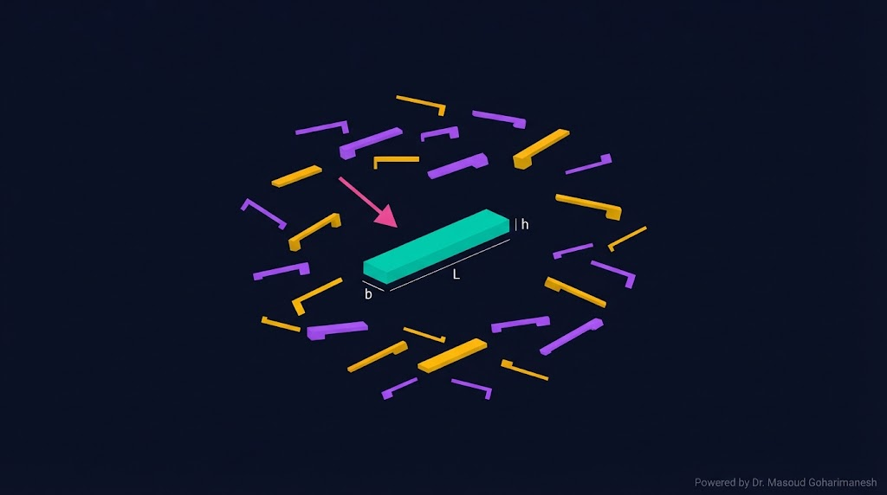
مسئله: طراحی نانو انبرک با **کمینهسازی حجم** و **بیشینهسازی فرکانس**، با قید Pull-in.
L، b، h (ابعاد تیر)
حجم، فرکانس
$V_{pull-in} \geq V_{min}$
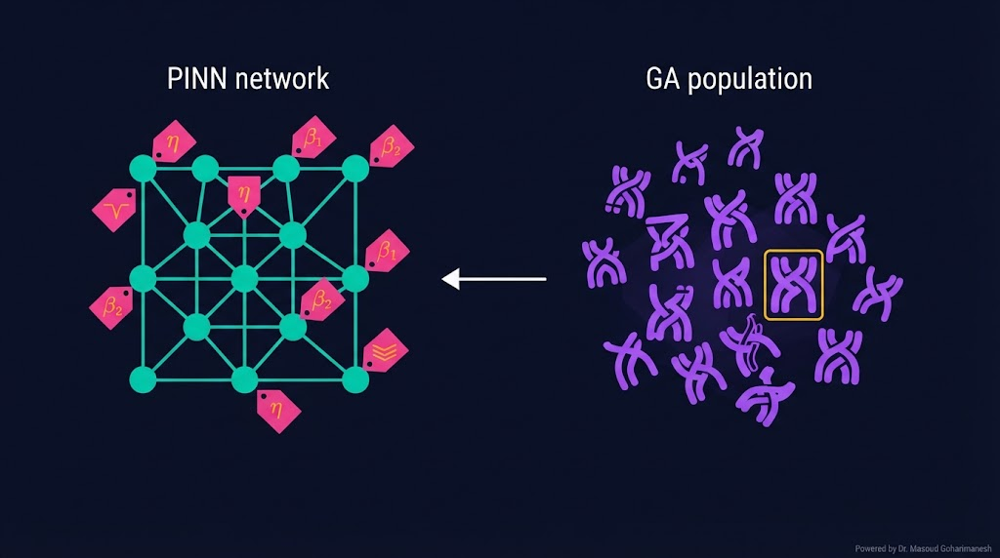
یکی از مهمترین کاربردهای GA در ML: بهینهسازی hyperparameterها برای شبکههای عصبی (از جمله PINN).
$n_{layers}، n_{hidden}$
$\eta$ (log scale)
$\lambda_{pde}، \lambda_{data}$
# ============================================ # Genetic Algorithm from scratch (NumPy) # ============================================ import numpy as np # --- تابع هدف: f(x) = x^2 + y^2 --- def f(x): return (x[:, 0] - 1)**2 + (x[:, 1] + 2)**2 # --- پارامترها --- pop_size = 50 n_genes = 2 # بعد مسئله n_gen = 100 p_crossover = 0.8 p_mutation = 0.1 bounds = (-5، 5) # --- مقداردهی اولیه --- population = np.random.uniform(bounds[0]، bounds[1]، (pop_size، n_genes)) def fitness(x): return -f(x) # منفی چون مینیمم میخواهیم for gen in range(n_gen): # 1) Fitness fit = fitness(population) # 2) Selection (tournament) parents = np.zeros_like(population) for i in range(pop_size): idx = np.random.choice(pop_size، 3، replace=False) best_idx = idx[np.argmax(fit[idx])] parents[i] = population[best_idx] # 3) Crossover offspring = parents.copy() for i in range(0، pop_size - 1، 2): if np.random.rand() < p_crossover: alpha = np.random.rand(n_genes) offspring[i] = alpha * parents[i] + (1 - alpha) * parents[i+1] offspring[i+1] = alpha * parents[i+1] + (1 - alpha) * parents[i] # 4) Mutation mask = np.random.rand(pop_size، n_genes) < p_mutation mutation = np.random.normal(0، 0.5، (pop_size، n_genes)) offspring = np.where(mask، offspring + mutation، offspring) offspring = np.clip(offspring، bounds[0]، bounds[1]) # 5) Replacement (elitism) combined = np.vstack([population، offspring]) combined_fit = fitness(combined) top_idx = np.argsort(combined_fit)[-pop_size:] population = combined[top_idx] if gen % 20 == 0: best_f = f(population).min() print(f'Gen {gen}: best f = {best_f:.6f}') # --- نتیجه --- best_idx = np.argmin(f(population)) best_x = population[best_idx] print(f'\nBest x: {best_x}') print(f'Best f: {f(best_x.reshape(1, -1))[0]:.6f}') # جواب دقیق: (1، -2)، f = 0
# ============================================ # PSO from scratch (PyTorch) # ============================================ import torch # --- تابع هدف: f(x) = (x-1)^2 + (y+2)^2 --- def f(x): return (x[:, 0] - 1)**2 + (x[:, 1] + 2)**2 # --- پارامترها --- n_particles = 30 n_dims = 2 n_iter = 200 w = 0.7 # inertia c1 = 2.0 # cognitive c2 = 2.0 # social bounds = (-5، 5) # --- مقداردهی اولیه --- positions = torch.rand(n_particles، n_dims) * (bounds[1] - bounds[0]) + bounds[0] velocities = torch.randn(n_particles، n_dims) * 0.1 pbest = positions.clone() pbest_val = f(pbest) gbest = pbest[argmin(pbest_val)] gbest_val = pbest_val.min() # --- PSO Loop --- for it in range(n_iter): for i in range(n_particles): r1 = torch.rand(n_dims) r2 = torch.rand(n_dims) # Update velocity cognitive = c1 * r1 * (pbest[i] - positions[i]) social = c2 * r2 * (gbest - positions[i]) velocities[i] = w * velocities[i] + cognitive + social # Update position positions[i] = positions[i] + velocities[i] positions[i] = torch.clamp(positions[i]، bounds[0]، bounds[1]) # Update pbest val = f(positions[i:i+1]) if val < pbest_val[i]: pbest[i] = positions[i].clone() pbest_val[i] = val # Update gbest if pbest_val.min() < gbest_val: gbest_val = pbest_val.min() gbest = pbest[torch.argmin(pbest_val)].clone() if it % 50 == 0: print(f'Iter {it}: gbest = {gbest.numpy()}، f = {gbest_val.item():.6f}') print(f'\nFinal: gbest = {gbest.numpy()}') print(f'f(gbest) = {gbest_val.item():.6f}') # جواب دقیق: (1، -2)، f = 0 # --- پیادهسازی با PyTorch Optimizer --- # (روش جایگزین: استفاده از torch.optim برای PSO) import torch.optim as optim positions = torch.randn(n_particles، n_dims، requires_grad=True) optimizer = optim.SGD([positions]، lr=0.01) pbest = positions.detach().clone() pbest_val = f(pbest) gbest = pbest[argmin(pbest_val)] for it in range(100): optimizer.zero_grad() loss = f(positions).sum() loss.backward() # Replace gradient with PSO-inspired update with torch.no_grad(): r1 = torch.rand(n_particles، n_dims) r2 = torch.rand(n_particles، n_dims) v = w * positions.grad + c1 * r1 * (pbest - positions) + c2 * r2 * (gbest - positions) positions -= 0.01 * v # Update bests current_val = f(positions.detach()) mask = current_val < pbest_val pbest[mask] = positions.detach()[mask].clone() pbest_val[mask] = current_val[mask] if pbest_val.min() < gbest_val: gbest_val = pbest_val.min() gbest = pbest[argmin(pbest_val)].clone() print(f'Final gbest: {gbest.numpy()}')
pymoo برای طراحی NEMS پیاده کنید.ارسال تمرینها:
m.goharimanesh@gmail.com
Subject الزامی:
[Advanced Engineering Mathematics] HW23 - نام و نام خانوادگی - شماره دانشجویی
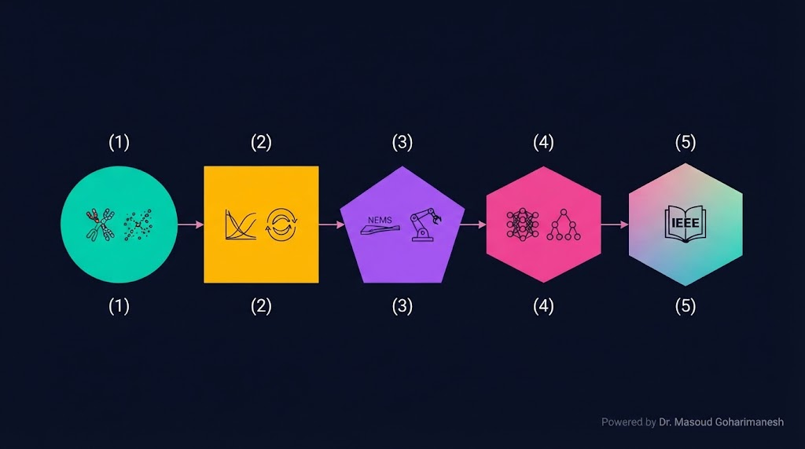
امروز یاد گرفتید چگونه از طبیعت الهام بگیرید! 🌟
قلب PSO — ترکیب حافظه شخصی و گروهی
کارگاه مقاله IEEE و جمعبندی
دکتر مسعود گوهری منش
دانشیار گروه مهندسی مکانیک — دانشگاه تربت حیدریه
🇮🇷 با افتخار برای دانشجویان مکاترونیک 🇮🇷
خواجه نصیرالدین طوسی (۱۲۰۱–۱۲۷۴ م) در کتاب «اخلاق ناصری» نظامی از انتخاب و تکامل اجتماعی تدوین کرد که در آن:
همانطور که خواجه نصیرالدین طوسی برای طراحی نظام اجتماعی بهینه، از مفاهیم تکامل و انتخاب استفاده کرد، GA نیز از همین اصول برای یافتن جواب بهینه بهره میبرد:
در PSO، هر ذره از حافظه شخصی و تجربه گروه استفاده میکند. این همان ایدهای است که خواجه نصیرالدین طوسی در نظام شورا و همکاری جمعی توصیف کرد: هر فرد از تجربه خود و دیگران یاد میگیرد.